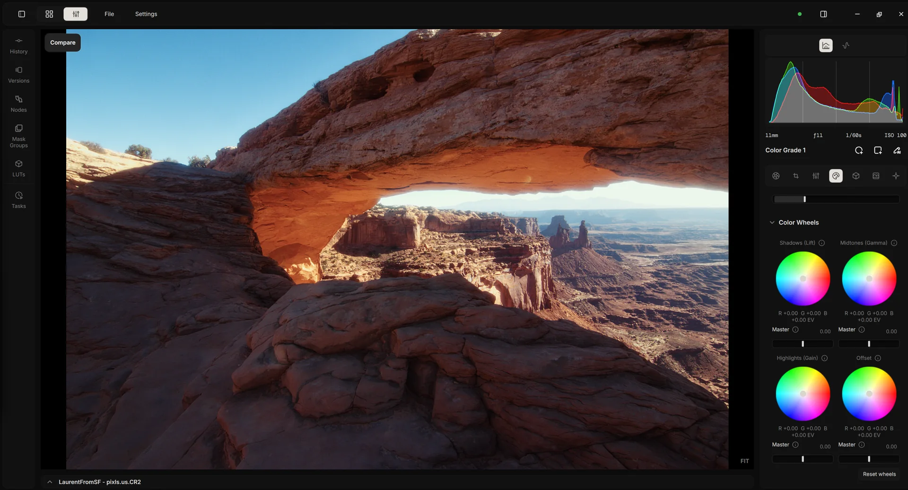

Alcedo Studio
Alcedo Studio
Modern RAW editor
Version 0.3.6, released on 17 November 2026. Release notes
Download for WindowsWindows 10 or 11, x64
Download for macOSApple Silicon, macOS 13.3 or later
DocumentationUser guide
Source codeGitHub, GPL-3.0
SHA-256 checksums: Windows · macOSOlder versionsFeature listalcedo-cli command reference
